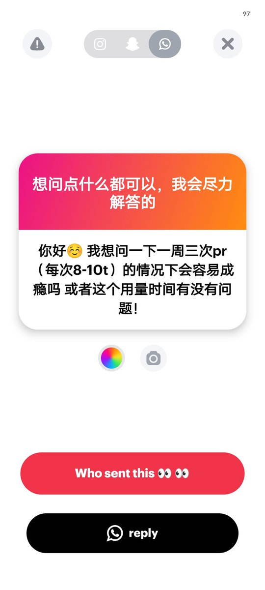

美術館館長
@xinshijie_1227
@_Shikieiki 我吃pr已经吃破产了还想吃，我现在的情况是最大剂量吃过150mg三盒，75mg4盒，一起吃了但是没药效，而且两天就想吃一次🥲

Shikieiki Yamaxanadu
@_Shikieiki
pr成瘾个人因素影响很大
我个人认为判断有没有成瘾是看戒断反应 如果你按照这样吃有效果而且不想加量 且停药后没严重(持续久的)戒断反应那就是还好
但是我认为一周三次可能还是有点多了) 一周两或者一次更好些
另外我不清楚这边的8-10t是指75mg还是150mg1t的? 如果是150mg的话8t已经是很多了哦 https://t.co/oMf1u0Wpdf